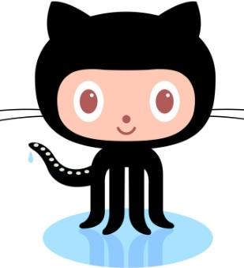

|
All About GitHub
Q. What is a version control system?
A. Version control system is a system that regularly records and logs the changes that have been made to
files and folders over a period of time, so that intermediary versions may be recovered at a later period in time.
Q. What is Git?
A. Git is a type of distributed version control system (VCS) that works differently from other such systems, in that it records the state of all
files given a commit, and then retroactively determines whether changes to files have warranted a version change.
Q. What is GitHub?
A. GitHub is the largest online platform dedicated to hosting Git repositories, with millions of users collaboratively contributing to projects and developers.
Q. What is the difference between Git and GitHub?
A. GitHub is the largest web provider of Git repositories. While Git is a command-line tool, GitHub functions as a GUI for the manipulation of Gits.
Q. Who started Github and how was it started?
A. GitHub was created by Chris Wanstrath, P. J. Hyett, Tom Preston-Werner, and Scott Chacon in 2008, after registering their company in San Francisco, CA in 2007.
Q. What company owns it now?
A. GitHub was acquired by the Microsoft Corporation in 2018 for $7.5 billion in stock. Over the past five years,
GitHub has remained largely independent of Microsoft as a subsidiary, similar to the LinkedIn Corporation.
Q. How much does a GitHub account cost?
A.GitHub provides its primary services for free to individuals and organizations, yet additional product packages ranging from $4-$21 come with a slew of additional services.
Q. What is the Octocat?
A. The Octocat is GitHub's official mascot. After purchasing a stock image of the "creature", creator and illlustrator Simon Oxley
was brought on to the team to create many versions of the Octopuss, which can be found at The Octodex..
Git/GitHub terms:
repository - these are GitHub's versions of folders and contain all of the project's files and revision histories.
commit - To commit is Git nomenclature for saving files after they have been altered, which records the changes themselves, their chronology, and authorship
fork - A fork is an independent copy of a Git repository that clones the code and settings of its "parent" repository.
push - As converse of the command "fetch", it transfers commits from a local repository to a remote one.
pull requests - Pull requests are mechanisms by which collaborators can notify each other about changes to code, so that these can be further scrutinized and expanded on
workflows - In Git, workflows are defined as automated processes that execute actions or "jobs" and can be triggered in a variety of ways.
issues - GitHub issues presents a way to track bugs and request features via a tracking system integrated into the GitHub service.
raw button - In GitHub. the raw button renders raw view, which can open a file it its raw form, meaning that all formatting is removed.
blame button - The GitHub blame button executes the Git blame command, which is used to determine which previous commit resulted in their corresponding alterations to a file.

|